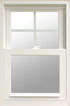

Best Sellers
-
Introducing 9800 Triple Glass Window
A full line of styles and a unique chamfered profile make Impressions 9800 series windows a sophisticated choice. Standard Low E glass and available advanced glass packages round out the series, while interior woodgrain options and attractive brass hardware set it apart
-

Windows
-
Swing & Clean Slider

Swing & Clean windows offer a crisp, clean design that accentuates the interior and exterior style of your home. But equally important is the superbly engineered pivot system that allows sash cleaning from inside your home. Each and every sash on a Swing & Clean window swings in for easy access to the inside glass surface, and the outside as well.
-
Excalibur

Excalibur Windows are beautiful and remarkably solid, sturdy and stable. Plus, our beveled mainframe design is exceptionally slim and refined.
-
UltraMax 
There's a unique feeling of confidence that comes from knowing you have chosen UltraMaxx® windows from Alside. They are not only beautiful; their heavy-gauge, fusion-welded vinyl sash and mainframe structure makes them incredibly strong and tough. Years of operation and harsh weather won't diminish their quality or performance. And they offer superior resistance to the elements and to air and water infiltration.
-
Model 9800

A full line of styles and a unique chamfered profile make Impressions 9800 series windows a sophisticated choice. Standard Low E glass and available advanced glass packages round out the series, while interior woodgrain options and attractive brass hardware set it apart
-
Model 800
Our top of the line 800 Series window is the most feature rich window in our line. Offered as a double hung, picture window and slider, it's designed with a beveled exterior frame. This series is made from our heaviest extrusion for greater thermal performance. We offer interior laminates in light oak, dark oak or cherry finish. In addition to the interior finish options, this window line is also available in a white interior with a bronze or hunter green exterior foil.
-
Bryn Mawr II
Bryn Mawr II windows combine state-of-the-art design and engineering with an outstanding range of styles and high-performance features. They are the choice of homeowners who want the highest performance, the most advanced styling and a solid value. They have been recognized for their quality by a major consumer publication.
-
Model 700 - Casement
Exceptional views are a definite reality when you choose our Bays and Bows. These windows are beautiful and energy efficient with the latest window glass technology. You can truly personalize your windows by implementing some of the many design options available including double-hung or casement configurations and an assortment of decorative grids.
-
Andersen Double Hungs
Rich natural wood interior, Attractive low-maintenance exteriors, Larger glass area lets in more light, Low-E or dual-pane insulating glass, Pine interiors available with factory-applied white finish
-
Andersen Casements
High-Performance Low-E4 glass stays cleaner and reduces water spotting, Nearly-invisible TruScene insect screen optional, Rich natural wood interior, Attractive low-maintenance exteriors, Larger glass area lets in more light, Vinyl cladding protects entire sash from rain, Reach-out lock pulls sash tightly against frame, Pine interiors available with factory-applied white finish
-
Andersen Bows/Bays
Attractive low-maintenance exteriors, Rich natural wood interior, Low-E or dual-pane insulating glass, Delivered as a complete unit to help speed installation
-
Pella ProLine

Basic Done Beautifully. Our most affordable windows are available in a wide variety of standard sizes and six colors.
-
Pella Designer Series
Innovations Others Can't Touch. Features our exclusive snap-in between-the-glass window fashions that are easy to change.
-
Pella Architect Series
Unsurpassed Architectural Expression. Virtually endless design options, including a collection of woods, unique shapes and sizes, unlimited exterior colors, standard and custom grille patterns and more.
-
Marvin double Hungs
Marvin's Ultimate Double Hung combines state-of-the-art window design with the classic style of the past.
-
Marvin Casements
Casement windows open and close from the side, like a book. Smooth, clean millwork defines the interior surfaces.
-
We also carry Specialty Windows - Garden Windows, Tilt - Sliders, Picture Windows, Awning Windows, Basement Windows